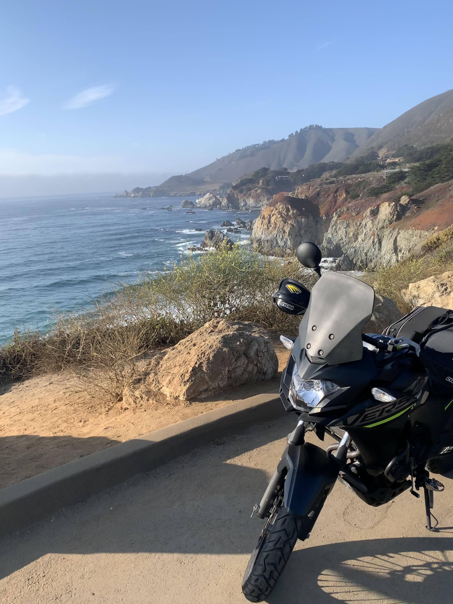
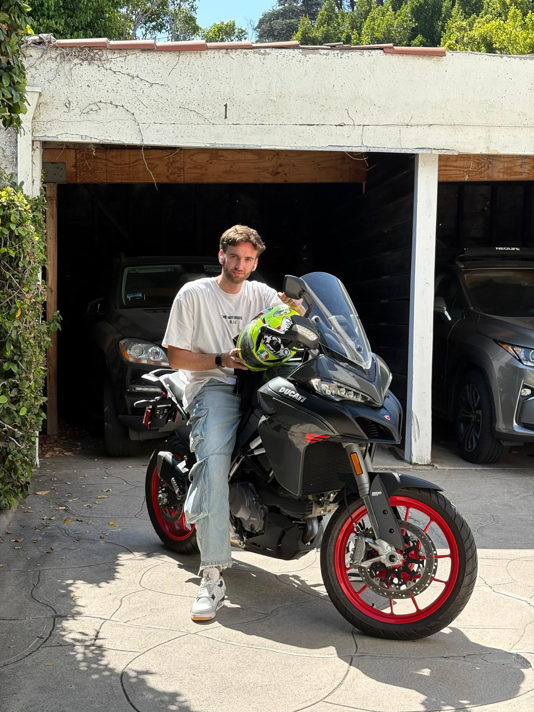

Motorcycle
Riding a motorcycle in LA makes my life immensely better.
A motorcycle always grants more freedom, more life. There is a real intimacy that comes with being in a car, the relationship you can have with the vehicle, and beautiful moments that come inside it. I love a good car ride, however, on a motorcycle, that experience gets amplified 10x.
Now, assuming ideal weather (no rain, not too cold), good road conditions (lane splitting, decent roads), and the right skills, a motorcycle ride is a shortcut to flow in my daily life. Imagine being a Spanish settler in the 1600s riding a horse through unexplored land. Riding a motorcycle is the closest thing we have to that today. We may lack the "settler" element, but we make up for it in terms of miles per hour (wtf is a kilometer). I cannot get over blending into the environments I explore, I can feel any slight temperature change on my body, I can smell and feel every single mile on a highway. I can see a future where responsibilities slow my riding down or stop it. I hope that day never comes.
I grew up riding scooters with my friends throughout the city of Rome, which is the best school ever because once you learn how to drive there you can feel comfortable anywhere else. A Honda SH 125 was my first owned bike.
When I moved to LA, I couldn't afford a car, so I stayed on two wheels. A used $700 125cc CaliClassic around the Westside while at Santa Monica College. Then a 300cc Kawasaki Versys to commute to USC (Del Amo Motorsport, Redondo Beach, $5K). Then I moved to SF on a black Versys-X 300 (about $4K, which I bought from an old Italian man in San Diego). I rode PCH up and down a couple of times. Those 500-mile rides along the California coast unlocked a deeper level of my consciousness.

I moved back to Los Angeles at 26 years old. My first purchase moving back? A brand new Ducati Multistrada V2S. I feel as if they designed it for me. I always dreamed of trying that bike. Now is the one I ride every day.
